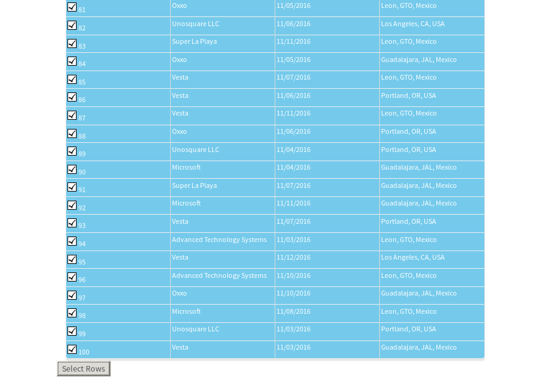
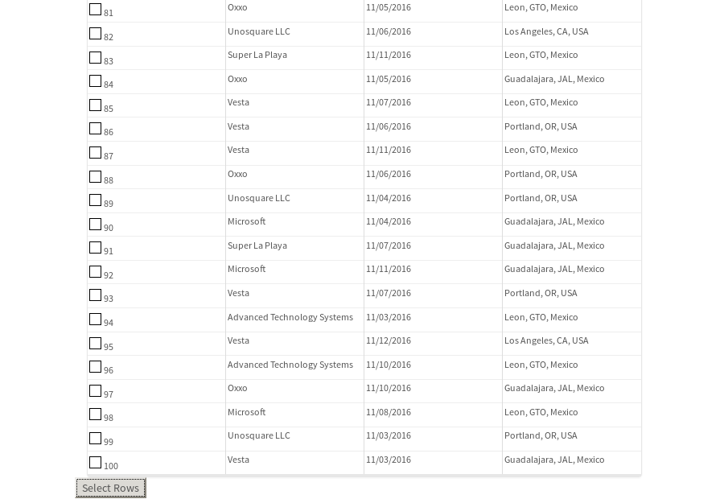

tbColumn.Grid Sorting - 27.775sTests: 5Skipped: 0Failures: 0 should sort data in ascending order then on descending order when sorting by Order Id column - 6.922sTests passed: 100.00%should order data in ascending order when click-sorting an unsorted text column - 5.592sTests passed: 100.00%should order data in descending order when click-sorting an ascending-sorted text column - 5.149sTests passed: 100.00%should order data in ascending order when click-sorting an unsorted date column - 4.443sTests passed: 100.00%should order data in descending order when click-sorting twice an unsorted date column - 5.669sTests passed: 100.00%
tbEmptyForm - 1.905sTests: 3Skipped: 0Failures: 0 should have an empty required field - 0.239sTests passed: 100.00%should not be able to click on save - 0.027sTests passed: 100.00%should load default value for numeric field - 0.03sTests passed: 100.00%
Tubular Filters.tbColumnFilter - 96.68sTests: 12Skipped: 0Failures: 0 should cancel filtering when clicking outside filter-popover - 7.72sTests passed: 100.00%should disable Value text-input for "None" filter - 5.813sTests passed: 100.00%should disable apply button for "None" filter - 5.855sTests passed: 100.00%should decorate popover button when showing data is being filtered for its column - 10.967sTests passed: 100.00%should correctly filter data for the "Equals" filtering option - 7.281sTests passed: 100.00%should correctly filter data for the "Not Equals" filtering option - 8.081sTests passed: 100.00%should correctly filter data for the "Contains" filtering option - 7.777sTests passed: 100.00%should correctly filter data for the "Not Contains" filtering option - 7.498sTests passed: 100.00%should correctly filter data for the "Starts With" filtering option - 6.477sTests passed: 100.00%should correctly filter data for the "Not Starts With" filtering option - 5.851sTests passed: 100.00%should correctly filter data for the "Ends With" filtering option - 5.984sTests passed: 100.00%should correctly filter data for the "Not Ends With" filtering option - 6.006sTests passed: 100.00%
Tubular Filters.tbColumnDateTimeFilter - 137.892sTests: 12Skipped: 0Failures: 0 should cancel filtering when clicking outside filter-popover - 6.863sTests passed: 100.00%should disable Value text-input for "None" filter - 5.471sTests passed: 100.00%should disable apply button for "None" filter - 18.961sTests passed: 100.00%should clear filtering when clicking on Clean button - 16.883sTests passed: 100.00%should decorate popover button when showing data is being filtered for its column - 11.321sTests passed: 100.00%should correctly filter data for the "Equals" filtering option - 6.082sTests passed: 100.00%should correctly filter data for the "Not Equals" filtering option - 6.444sTests passed: 100.00%should correctly filter data for the "Between" filtering option - 10.97sTests passed: 100.00%should correctly filter data for the "Greater-or-equal" filtering option - 10.81sTests passed: 100.00%should correctly filter data for the "Greater" filtering option - 10.852sTests passed: 100.00%should correctly filter data for the "Less-or-equal" filtering option - 11.048sTests passed: 100.00%should correctly filter data for the "Less" filtering option - 11.066sTests passed: 100.00%
Tubular Filters.tbColumnOptionsFilter - 76.909sTests: 3Skipped: 0Failures: 0 should cancel filtering when clicking outside filter-popover - 7.068sTests passed: 100.00%should decorate popover button when showing data is being filtered for its column - 10.606sTests passed: 100.00%should filter column-elements in accordance to the selected filter when selecting a single option - 47.927sTests passed: 100.00%
Tubular Filters.tbTextSearch - 43.622sTests: 5Skipped: 0Failures: 0 min-chars is not set - 0.069sTests passed: 100.00%should filter data in searchable-column customer name to matching inputted text, starting from 3 characters - 5.777sTests passed: 100.00%should filter data in searchable-column shipper city to matching inputted text, starting from 3 characters - 10.942sTests passed: 100.00%should show clear button when there is inputted text only - 5.605sTests passed: 100.00%should clear filtering when clicking clear button - 15.567sTests passed: 100.00%
tbForm related components.tbCheckboxField - 5.571sTests: 2Skipped: 0Failures: 0 should save changes on "SAVE" - 2.389sTests passed: 100.00%should discard changes on "CANCEL" - 1.622sTests passed: 100.00%
tbForm related components.tbDropDownEditor - 5.643sTests: 5Skipped: 0Failures: 0 should set initial input value to the value of "value" attribute when defined - 0.695sTests passed: 100.00%should show the component name value in a label field when "showLabel" attribute is true - 0.675sTests passed: 100.00%should show a help field equal to this attribute, is present - 0.678sTests passed: 100.00%should submit modifications to item/server when clicking form "Save" - 1.984sTests passed: 100.00%should NOT submit modifications to item/server when clicking form "Cancel" - 1.049sTests passed: 100.00%
tbForm related components.tbTextArea - 9.069sTests: 7Skipped: 0Failures: 0 should set initial input value to the value of "value" attribute when defined - 0.786sTests passed: 100.00%should be invalidated when the number of chars is not in the range of "min" and "max" attributes - 1.092sTests passed: 100.00%should show the component name value in a label field when "showLabel" attribute is true - 0.669sTests passed: 100.00%should show a help field equal to this attribute, is present - 0.622sTests passed: 100.00%should require the field when the attribute "required" is true - 0.789sTests passed: 100.00%should submit modifications to item/server when clicking form "Save" - 2.439sTests passed: 100.00%should NOT submit modifications to item/server when clicking form "Cancel" - 1.1sTests passed: 100.00%
tbForm related components.tbDateEditor - 7.187sTests: 6Skipped: 0Failures: 0 should set initial date value to the value of "value" attribute when defined - 0.698sTests passed: 100.00%should be invalidated when the date is not in the range of "min" and "max" attributes - 1.191sTests passed: 100.00%should show the component name value in a label field when "showLabel" attribute is true - 0.664sTests passed: 100.00%should show a help field equal to this attribute, is present - 0.659sTests passed: 100.00%should submit modifications to item/server when clicking form "Save" - 1.637sTests passed: 100.00%should NOT submit modifications to item/server when clicking form "Cancel" - 1.61sTests passed: 100.00%
tbForm related components.tbTypeaheadEditor - 9.612sTests: 7Skipped: 0Failures: 0 should show an options list when there is an API-info/component entered-data - 1.158sTests passed: 100.00%should select the option clicked - 1.067sTests passed: 100.00%should show a "delete" button when an option/match is selected, and delete the option if button is clicked - 1.573sTests passed: 100.00%should show a label value equal to the component name when "showLabel" attribute is true - 0.86sTests passed: 100.00%should require a value when "require" attribute is true - 1.15sTests passed: 100.00%should submit modifications to item/server when clicking form "Save" - 2.001sTests passed: 100.00%should NOT submit modifications to item/server when clicking form "Cancel" - 1.008sTests passed: 100.00%
tbForm related components.tbSimpleEditor - 9.335sTests: 9Skipped: 0Failures: 0 should set initial input value to the value of "value" attribute when defined - 0.771sTests passed: 100.00%should be invalidated when the number of chars is not in the range of "min" and "max" attributes - 1.101sTests passed: 100.00%should show the component name value in a label field when "showLabel" attribute is true - 0.611sTests passed: 100.00%should set input placeholder to the value of "placeholder" attribute - 0.817sTests passed: 100.00%should validate the control using the "regex" attribute, if present - 0.823sTests passed: 100.00%should show a help field equal to this attribute, is present - 0.641sTests passed: 100.00%should require the field when the attribute "required" is true - 0.755sTests passed: 100.00%should submit modifications to item/server when clicking form "Save" - 2.286sTests passed: 100.00%should NOT submit modifications to item/server when clicking form "Cancel" - 0.985sTests passed: 100.00%
tbForm related components.tbNumericEditor - 8.941sTests: 7Skipped: 0Failures: 0 should set initial component value to the value of "value" attribute when defined - 0.595sTests passed: 100.00%should be invalidated when the entered number is not in the range of "min" and "max" attributes - 1.065sTests passed: 100.00%should show the component name value in a label field when "showLabel" attribute is true - 0.775sTests passed: 100.00%should show a help field equal to this attribute, is present - 0.678sTests passed: 100.00%should require the field when the attribute "required" is true - 0.886sTests passed: 100.00%should submit modifications to item/server when clicking form "Save" - 3.257sTests passed: 100.00%should NOT submit modifications to item/server when clicking form "Cancel" - 1.09sTests passed: 100.00%
tbForm Connection Error NoModelKey - 1.846sTests: 1Skipped: 0Failures: 0 tbForm connection error functionality - 0.005sTests passed: 100.00%
tbForm Connection Error NoServerUrl - 1.842sTests: 1Skipped: 0Failures: 0 tbForm connection error functionality - 0.002sTests passed: 100.00%
tbGridComponents - 6.235sTests: 6Skipped: 0Failures: 0 should add item with newRow method - 2.227sTests passed: 100.00%should add item with newRow method and cancel action - 0.272sTests passed: 100.00%should update item with tbSaveButton - 0.862sTests passed: 100.00%should NOT update item on cancel Update action - 0.363sTests passed: 100.00%should remove item with tbRemoveButton - 0.776sTests passed: 100.00%should NOT remove item on cancel Remove action - 0.383sTests passed: 100.00%
tbGridPager.navigation buttons - 2.43sTests: 1Skipped: 0Failures: 0 should perform no action when clicking on the numbered navigation button corresponding to the current-showing results page - 0.609sTests passed: 100.00%
tbGridPager.navigation buttons.first/non-last results page related functionality - 0.757sTests: 2Skipped: 0Failures: 0 should disable "first" and "previous" navigation buttons when in first results page - 0.124sTests passed: 100.00%should enable "last" and "next" navigation buttons when in a results page other than last - 0.633sTests passed: 100.00%
tbGridPager.navigation buttons.last/non-first results page related functionality - 1.064sTests: 2Skipped: 0Failures: 0 should disable "last" and "next" navigation buttons when in last results page - 0.539sTests passed: 100.00%should enable "first" and "previous" navigation buttons when in a results page other than first - 0.524sTests passed: 100.00%
tbGridPager.page navigation - 3.82sTests: 5Skipped: 0Failures: 0 should go to next results page when clicking on next navigation button - 0.982sTests passed: 100.00%should go to previous results page when clicking on previous navigation button - 1.026sTests passed: 100.00%should go to last results page when clicking on last navigation button - 0.592sTests passed: 100.00%should go to first results page when clicking on first navigation button - 0.685sTests passed: 100.00%should go to corresponding results page when clicking on a numbered navigation button - 0.535sTests passed: 100.00%
tbGridPagerInfo - 3.903sTests: 2Skipped: 0Failures: 0 should show text in accordance to numbered of filter rows and current results-page - 1.652sTests passed: 100.00%should show count in footer - 0.03sTests passed: 100.00%
tbPageSizeSelctor - 12.423sTests: 4Skipped: 0Failures: 0 should filter up to 10 data rows per page when selecting a page size of "10" - 2.704sTests passed: 100.00%should filter up to 20 data rows per page when selecting a page size of "20" - 2.177sTests passed: 100.00%should filter up to 50 data rows per page when selecting a page size of "50" - 2.819sTests passed: 100.00%should filter up to 100 data rows per page when selecting a page size of "100" - 3.156sTests passed: 100.00%
tbRowSelectable - 8.194sTests: 2Skipped: 0Failures: 2 selected rows - 4.196sExpected NaN to equal 100.✗Tests passed: 0.00%unselected rows - 2.492sExpected '' to be '0'.✗Tests passed: 0.00%
tbSingleForm - 13.755sTests: 8Skipped: 1Failures: 0 should load correct info - 0.001s***Skipped***Tests passed: 0%should change customer name - 1.82sTests passed: 100.00%should save it - 2.534sTests passed: 100.00%should clear the inputs - 1.772sTests passed: 100.00%should update - 1.964sTests passed: 100.00%should reset editor - 2.001sTests passed: 100.00%should not save if not Changes - 1.785sTests passed: 100.00%should not be able to click on save - 1.878sTests passed: 100.00%
{kind=link}
{kind=link}